> Artists > Clay Witt > Images
Clay Witt

Images | Images 2 | Images 3 | Info | Collaboration
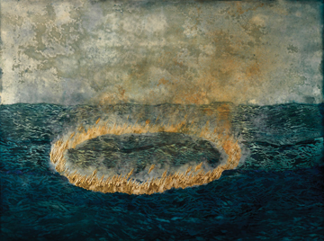

Clay Witt. Leviathan, 2009.
Cut paper, mineral pigment, polymer emulsion, gesso, gold leaf, and rust on canvas mounted to panel, 36 x 48 inches
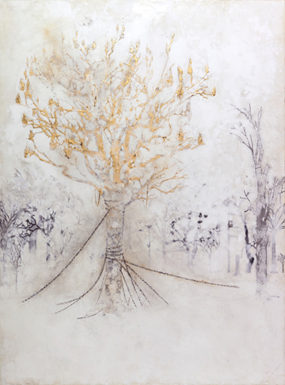
Clay Witt. Antediluvian Blizzard, 2010.
Cut Japanese paper, polymer emulsion, marble dust, ink, and rust on canvas on panel
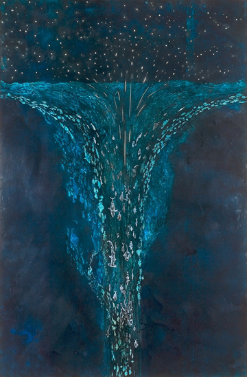
Clay Witt. Exodus at the Edge of the Earth, 2010.
Cut Japanese paper, polymer emulsion, ink, lapis lazuli, mica, gesso, bole, white gold leaf, and rust on canvas mounted to panel, 72 x 48 inches
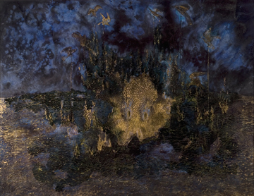
Clay Witt. Octapotheosis, 2010.
Cut Japanese paper, gesso, bole, ink, gold leaf, lapis lazuli on canvas on panel, 36 x 48 inches
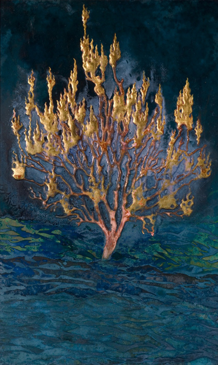
Clay Witt. Untitled, 2009-10.
Cut Japanese paper, polymer emulsion, ink, lapis lazuli, gesso, bole, gold leaf and rust on panel, 15 x 9 inches
sold
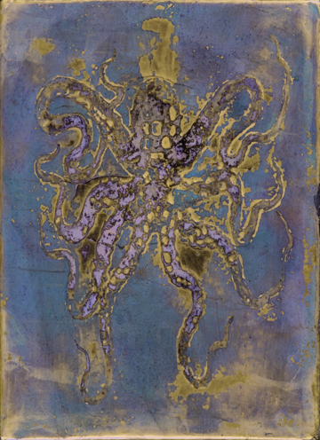
Clay Witt. St. Otto, 2010.
Gesso, bole, gold leaf, and lapis lazuli on panel, 7 x 5 inches
sold
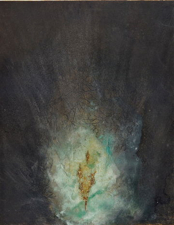
Clay Witt. Sights Unseen: Burning Bush I.
Intaglio print, malachite, gesso, ink, white gold leaf, bole, and rust on Japanese paper, 22 3/4 x 18 inches
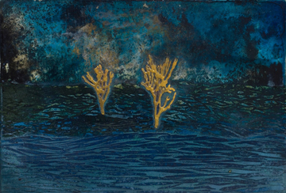
Clay Witt. Ocean Study, 2010.
Cut Japanese paper, polymer emulsion, ink, lapis lazuli, gesso, bole, gold leaf, and rust on panel, 10 x 7 inches
sold
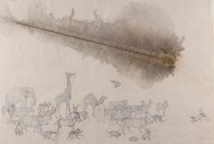
Clay Witt. Meteor, 2009.
Collaged intaglio prints, ink, polymer emulsion, gesso, bole, gold leaf, marble dust, and rust on Japanese paper, 25 x 36 1/2 inches

Clay Witt. Octopi and Sting Ray Study, 2010.
Cut Japanese paper, malachite, lapis lazuli, polymer emulsion, and hide glue on Japanese paper, 10 1/2 x 8 1/2 inches
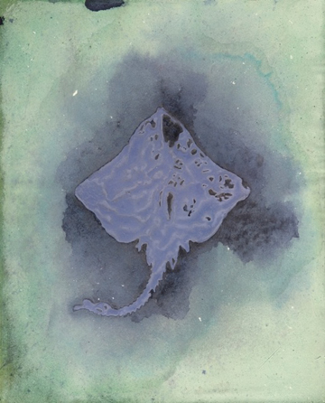
Clay Witt. Sting Ray Study II, 2010.
Cut Japanese paper, malachite, lapis lazuli, polymer emulsion, and hide glue on Japanese paper, 10 x 8 1/2 inches
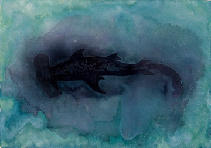
Clay Witt. Hammerhead Shark Study.
Cut Japanese paper, lapis lazuli, ink, polymer emulsion, and hide glue on Japanese paper, 14 1/2 x 10 1/4 inches
Images | Images 2 | Images 3 | Info | Collaboration
|